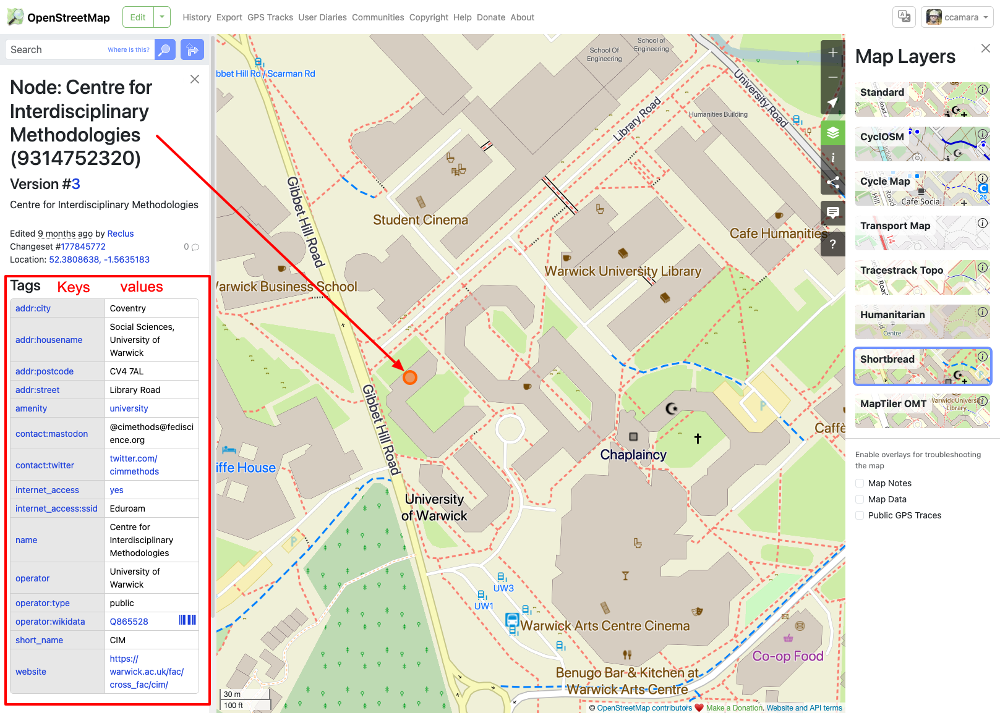
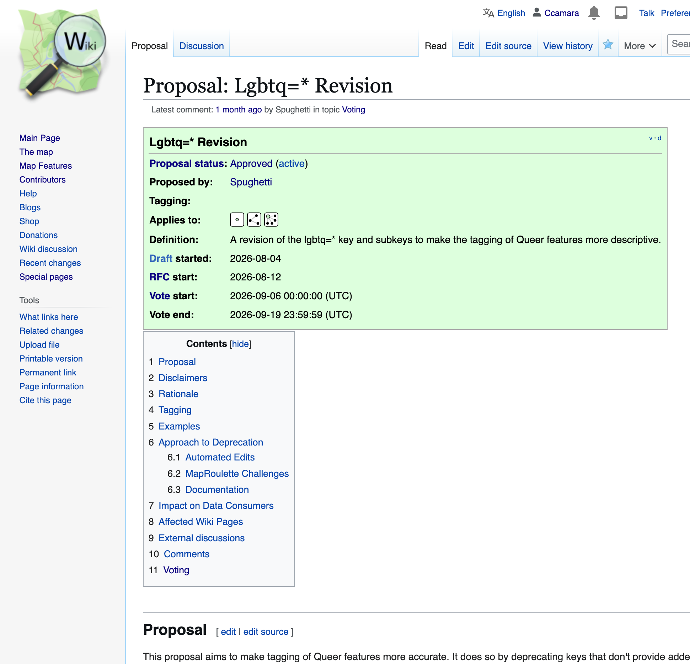
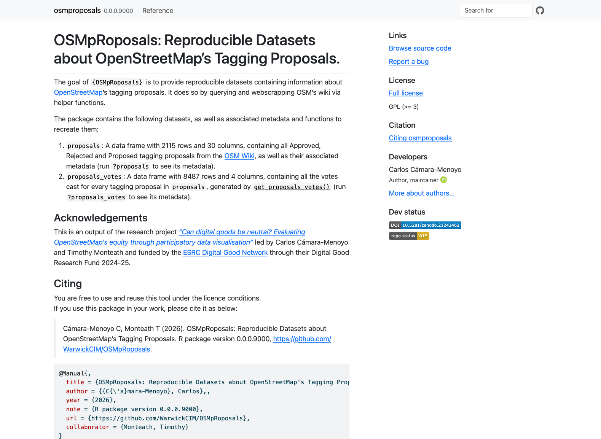

IM952 Labs
Week 5 - Working with data locally
Centre for Interdisciplinary Methodologies (University of Warwick)
Labs overview
We will be replicating an ongoing research project that uses a data-centric approach to interrogate about considerations of data production and EDI.
Learning outcomes:
Gain technical skills to work with and interrogate datasets to address real research questions
Gain critical skills to interrogate and work with dataset
Familiarise with data-centric research projects
About the research
Can Digital Goods Be Neutral?
Evaluating OpenStreetMap’s equity through participatory data visualisation
The foundations of this work reside on the collaborative work made with an amazing team:
UNIVERSITY OF WARWICK
Dr. Carlos Cámara-Menoyo (PI)
Dr. Timothy Monteath (Co-I)
Hazel Cyril, Lilly Makkos (RAs)
GEOCHICAS
Dr. Selene Yang
Silvia Rivera Alfaro
Alejandra Canclini
ADVISORY GROUP
Dr. Jorge León (Universidad de Zaragoza)
Dr. Rachel Palmen (Universitat Oberta de Catalunya)
This project was funded by the ESRC Digital Good Network, through their Research Fund 2024-25.
The problem
Historically, Maps and power have gone hand in hand.(Crampton 2009; Harley 2008; Wood 1992)
- Maps are never neutral: they have a political agenda (Haraway 1988; Harley 1989; Monmonier 2018)
- Historically used for domination, control and/or surveillance (Foucault 1995; Scott 2020; Graham 2005; Edney 1999)
Critical and Feminist Geography have critiqued map’s objectivity:
Flagging (unconscious) bias by map-makers (usually men) (Monk and Hanson 1982)
Challenging positivist approaches and based exclusively in quantification (Pickles 1995)
Highlighting importance on what is being presented and silenced (Pavlovskaya 2009; Kwan 2002; d’Ignazio and Klein 2020)
Object of study
OpenStreetMap: more than a map
OSM is the biggest and most precise free/libre spatial database of the world
- It’s a Geospatial Database
- 9.1 billion nodes (2024-03-31) | Data under Open Database License (ODbL)
- Flexible data structure based on
key = valuepairs
- It is also a map (or a series of maps)
- that have an opinionated representation of the database
- It is a global and huge community (of 10,000,000 users worldwide!):
- Anyone can contribute to it:
- Adding / Editing map
- Deciding what is included and how is represented
Two notes on OSM data
Size: OSM data is large! 167 GB (compressed). To reduce size:
- Split by region, time

Screenshot from Geofabrik’s download page: https://download.geofabrik.de/
Structure: key(s) = value(s)

Map showing the tags used on a particular Node (CIM)

Same node, on the editor. Showing the interface for adding new keys
The questions
Some questions we were asking ourselves were:
- Who is contributing to OSM?
- How are they contributing?
- How equitable and inclusive is OSM’s data?
Today’s plan
You will be working with your laptops with a real dataset about OSM’s tagging proposals.to:
- Explore it
- Interrogate it
- Manipulate it
In order to address similar questions about EDI in the data production process.
Session’s goals
- Familiarise with the dataset (and the process it represents)
- learn tidyverse’s syntax for frequent data manipulations:
filter()to subset rows matching some conditionsselect(), to subset columns (by name or position)group()andsummarise()to compute summaries based on some criteriajoin_by()to combine datasets
- learn when to apply these methods to address research questions
Data
Tagging proposals
Anyone can suggest what to tag and/or how to tag it. Process documented here.
- Create a wiki page describing the proposal and its rationale
- Request for Comments
- Address every comment
- Voting
- Min 8 votes
- Min 3 positive votes per 1 negative vote

Datasets
Via {OSMpRoposals} R-package: Provides two reproducible, citable, documented and ready to use (offline) datasets:
proposals: a dataframe of every tagging proposal, consisting of 1,983 rows and 36 columns.votes: a dataframe of every vote cast, consisting of 8,511` rows and 5 columns.
Methods: Data Gathering and cleaning:
Data Gathering: API Query (MediaWiki) +
Web scrapping
Data cleaning: filtering right types of content, values extraction, formatting…
Documentation
- Datasets’ metadata
- Functions
- Usage and download (WIP)
- DOI and how to cite

Questions
We will be interrogating our data to answer these groups of questions:
- How diverse is this dataset?
- How much labour is involved in creating a tagging proposal?
References

IM952 - Week 5